Последний день весны 2021
Этот пост посвящается Степану Латыпову — арбористу и защитнику ежей.
Ну что, братцы! Приветствую вас.
Получайте дозу солнечных, выцветших от жары фоток с Туманного Альбиона. Как именно выцветают цифровые фотки, и замешано ли здесь баловство с фильтрами — пока не уточняется. Тем, кто любит много картинок в хорошем качестве и без дурацких комментариев, пожалуйте по ссылке. Там здорово больше картинок, потому что в блог, как ни запихивай коленом, всё не влазит.
Эта весна была холодной и довольно дождливой, не в пример предыдущей. Я помню, как год назад мы сидели перед окном на своём 8-м этаже, на полу, и жарились под палящими лучами полуденного Лондонского солнца. Оно к тому моменту как раз успевало вылезти с западной стороны. Ковид-19 только ударил, и все были ещё не привыкшие работать из дома. Сидели мы перед окном, потому что был обеденный перерыв, и мы устраивали что-то вроде пикника на обочине (с муравьями). Мы съедали один, а то и два пакета морковки и наблюдали за жизнью Кройдона, которая простиралась от Брайтон-роуд внизу и до самого горизонта. Потом пришли строители, обрастили дом со всех сторон лесами, и лавку пришлось сворачивать.
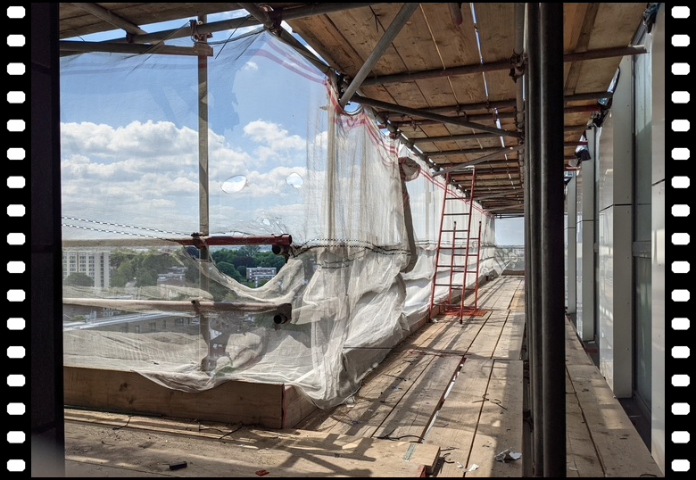
В прошлом году мы много ходили по выходным, потому что была хорошая погода — из окна видна даль, и всё такое. Весна открывает в пространстве новое измерение, а в душе — тягу бродить под звёздами. В этом году, завешенные строительной сеткой, прибитые весенним обострением на работе и окончательно докананные каждодневным бегом, мы сидели дома до последнего. Но вот этот последний день наступил. Стоит отметить, впрочем, что это был первый по-настоящему тёплый день (если верить погодному сайту, температура добралась до 23-х). Также сыграл некоторую роль тот факт, что это был четвёртый по счёту выходной, и мы успели немного расправить горбы и оторвать глаза от мониторов.
Но начинается моё повествование всё равно не с похода, а с компьютера. Видели ли вы когда-нибудь по-настоящему красивый компьютер? Не берём в расчёт внутреннюю красоту — герцы, байты, архитектуру процессора и прочие технические характеристики. Я говорю о настоящей красоте, не имеющей ничего общего с практикой. Когда в компьютере хочется жить, уменьшившись до размеров клопа — именно такой комп ухитрился купить Сергей Анатольевич.
Блеклое изображение снизу вам ничего не скажет. Увы! Как ни пыталась я сфоткать этот комп, получается одно лишь отражение моих скрюченных рук (а если не повезёт то и ног). На самом деле внутри него — мир, похожий на город из начальных кадров Blade Runner. Там рыжие и огоньки синие отблески видеокарты, светящийся по периметру кулер “Be quiet!”, шорох которого напоминает шум прохладной реки. В общем, как бы мне ни нравилась романтика мотков провода и торчащих из корпуса пластин, но этот комп поразил меня в самое сердце.
Шёл четвёртый день как его привезли, и третий день с тех пор как пришёл дополнительный шнурок для монитора. Вообще, комп очень сильно задержался с доставкой — несколько недель или что-то около того. Сергей Анатольевич упорно был 43-м в очереди, и никакое течение времени не могло этого изменить. Он уже было думал, что это обувной магазин, но потом почитал гневные отзывы на сайте и успокоился. Написал им вежливое письмо (мол, ребята, как насчёт 42-го места вместо 43-го? — домыслы переводчика). Я думала, ждать придётся около полугода. Но вежливое письмо их проняло, и они как-то вдруг взяли и прислали весь комп сразу.
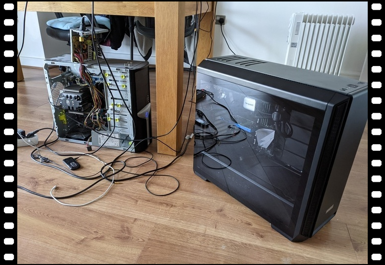
Как я уже сказала, шел четвёртый день, и Сергей Анатольич успел rsync-нуть почти все конфиги со старого компа. Поэтому, отринув прах и отряхнув сор и тлен, мы вытащили старые кости погреться на солнце (как и менее привлекательные части тела вроде мешков под глазами, лысеющих затылков, не рассосавшихся за зиму жировиков и прочего, что обрушивается на человека, который одевает “севшую после стирки” летнюю майку впервые после года работы из дома в одежде не-совсем-делового стиля).
Путь наш пролегал частично по уже знакомой местности, и раннего вставания не предполагал. Также он не предполагал строгого расчёта времени, грамотного запаса воды и еды, экономии заряда на телефоне и других непреодолимых препятствий. В общем и целом, мы просто решили пройти ненапряжную пятнашку по заведомо красивым местам на южной границе Лондона. И хоть я и говорю “Лондон”, представлять нужно совсем не Темзу и шпили в тумане, а около-Толкиеновскую деревенскую местность. По южной границе Лондона проходит так называемый North Downs Way, то есть “путь по Северным Холмам”. Чтобы уловить тут логику, надо понимать, что Лондон — не центр мира, и кроме North Downs Way есть ещё значительно более дикий и южный South Downs Way.
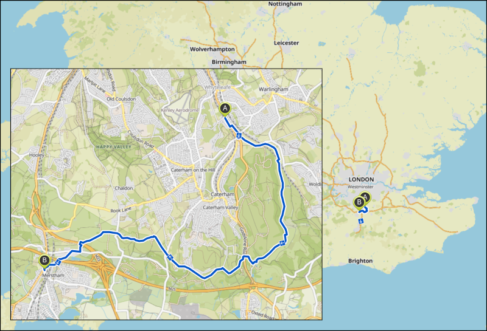
На карте вы можете видеть наш путь и его же в масштабах островка. (А ещё вы можете видеть, какие плохие в Англии дороги — обрываются прямо на середине. Шутка переводчика.)
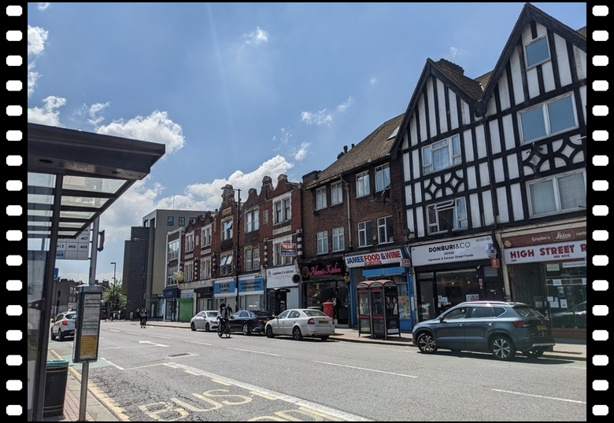
До начальной точки — поселения Whyteleafe — мы добирались, как бывалые походники, на автобусе. Ну ничего, зато прошлой весной мы сходили туда пешком разными путями минимум пять раз. Ехать там недолго — может, минут пятнадцать, примерно как ждать автобуса. Остановка находится прямо у нас под домом, в одной минуте ходьбы. А все эти забегаловки и магазы на фотке — то, что мы наблюдаем каждый день с восьмого этажа.
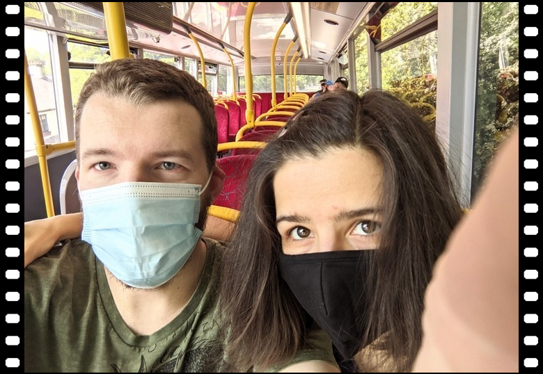
Ехали мы на переднем сиденье второго этажа, гордо рассекая прибрежные деревья. Маски в транспорте носить обязательно, но кажись я надела свою в спешке андроидом внутрь. Там зелёный андроид, потому что маску мне выдали на работе вместо зарплаты (очередная шутка переводчика). Спешка возникла потому, что я заранее достала минимум четыре предмета, которые нужны при входе в автобус: карточку Oyster (здешний проездной), маску, вторую маску для Сергей Анатольича и телефон, с которым я за пределами работы совсем не умею обращаться. Рук у меня меньше четырёх, а карманов в предательских штанах нема, поэтому когда внезапно оказалось что автобус уже стоит с открытыми дверями, я разрывалась между попытками надеть маску и заплатить за проезд.
Кстати, о штанах и карманах. Штаны — одна из нерешённых проблем математики. Они или спортивные, и тогда на них нет карманов, или нормальные, и тогда они болтаются при подъёме на гору и цепляются за ноги. Вообще, одежда иногда здорово бесит, особенно севшая после стирки. И только я успею к какой-нибудь одежде привыкнуть, как оказывается что в ней уже вооот такая дыра во всю спину. Есть пара неснашиваемых вещей из чистой синтетики, которые я никогда не постираю чтобы они не сели, но в жаркий день подводят и они. Завидую людям, которых одежда не парит. :)
Вышли из автобуса мы по велению вспотевшего лица, а не логики, поэтому до начала основного пути пришлось ещё прошлёпать километр вдоль дороги. Ну ничего, там неплохо: слева крутейшие меловые откосы, по которым мы шлялись в одни из тех разов, когда ходили в Whyteleafe. А справа местность, по которой ходили в другие разы. С дороги ничего этого не видно, но главное — знать, что идёшь по хорошим местам, где натёр не одну мозоль и стоптал в хлам не одни носки. Где-то там на высоте труднонаходимая лестница в тысячу ступеней. (На самом деле — 250. Дотошное уточнение переводчика.)
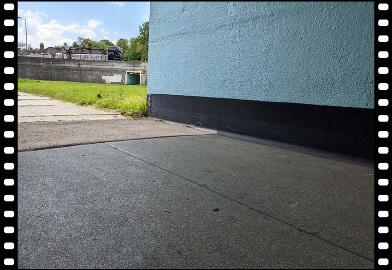
Основной наш путь начался со странной шестидорожной развязки, в центре которой — широкая плоская яма метров пять глубиной. В неё ведут подземные бетонные туннели. На дне ямы трава и бетонные дороги, которые встречаются в центре. Этакий переход под открытым небом. Мы были тут уже во второй раз, поэтому догадывались, в какую сторону выходить. После выхода из ямы дорога сразу меняется. (Кстати, если вас удручает внезапный переход повествования из прошлого времени в настоящее, то не расстраивайтесь — сколько лет пишу эти посты, всё у меня со временем нелады. Начинать рассказ как-то глупо в настоящем, а вести хронику событий под картинками в прошлом тоже довольно глупо. Дотошное объяснение переводчика.)
Так вот, слева и справа — холмы, покрытые лугами и лесом. (Тут математик требует уточнить, что и луга, и лес встречаются и как слева, так и справа — а то можно подумать, что одно слева, а второе справа. Не перепутайте! Кстати, некоторых людей бесят подобные многословные шутки — говорю так, на всякий случай.)
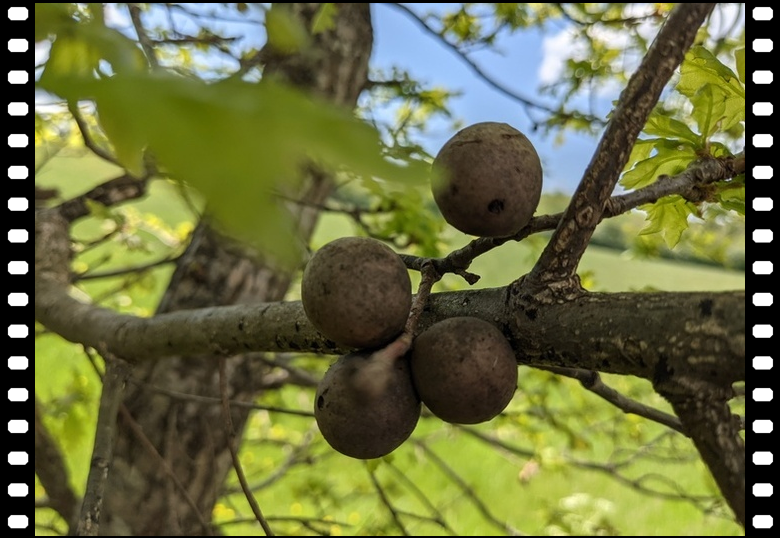
Мы идём по узкой обочине вдоль дороги. По пути встречается мелкий несолидный дуб с какими-то шариками вместо желудей.
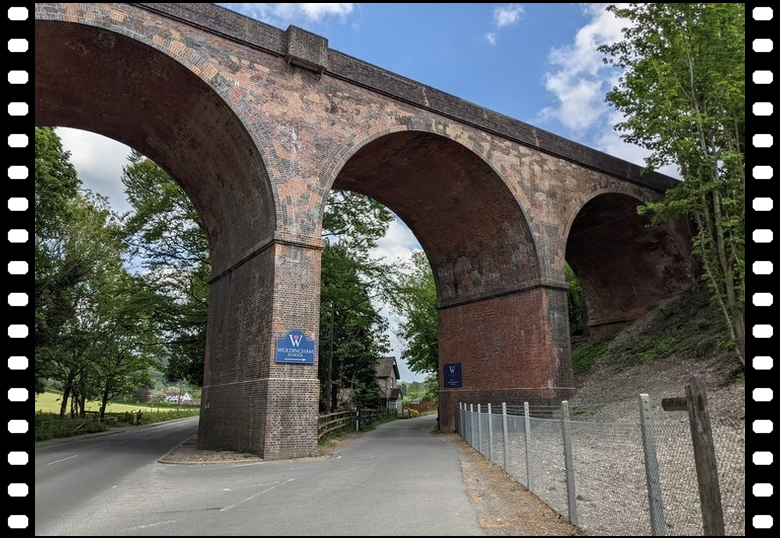
Обочина заканчивается у моста. Здесь прохладнее: под ногами течёт какая-то непонятно откуда взявшаяся вода, как будто неподалёку мойка для бегемотов. Точно не помню, но вроде похожая картина наблюдалась год назад. За мостом дорога разветвляется: основная трасса уходит прямо, а мелкая просёлочная дорога забирает изгибом вправо. Нам как раз на эту мелкую, просёлочную. На мосту висит табличка Woldingham School (Уолдингхэмовская школа). В прошлый раз мы сошли с дороги, заблудились в Чесночном Лесу и спустились по тропе к самой этой школе — она представляет из себя академ-городок посреди леса с домами из рыжего кирпича и фундаментальными соснами при входе. В тот раз там никого не было — видимо у детей было лето и каникулы. На этот раз Чесночному Лесу не сбить нас с пути, и в школу мы не собираемся. За мостом проходим уже знакомую избушку.
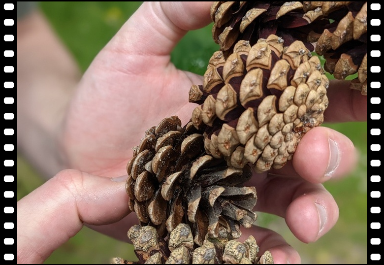
По дороге Сергей Анатольевич набрал шишек и сцепил их в змею.
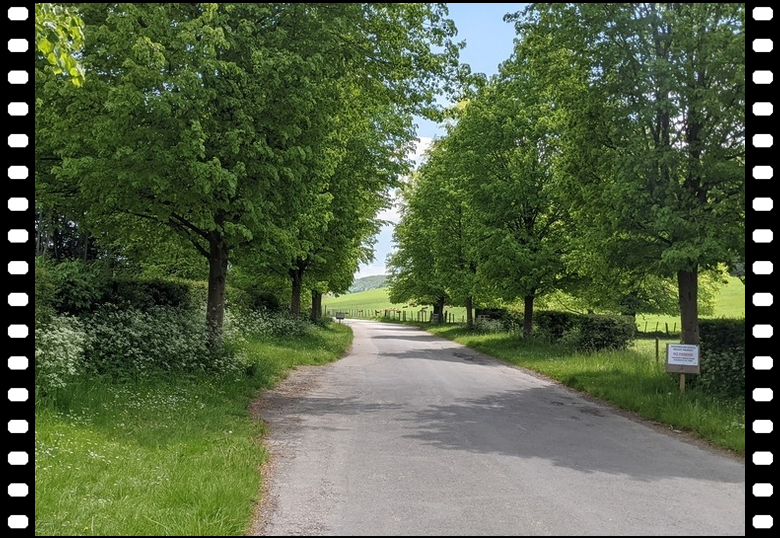
Следующий участок дороги оставляет чувство, что вы перенеслись из Лондонской деревни в городскую аллею одного из парков Минска. Это всё липы виноваты: типичные городские деревья, способные любому месту придать такой вид, как будто тут налево консерватория, а направо оперный театр. Не хватает только Лапенковских тощих интеллигентов в квадратных очках и летних рубашках с коротким рукавом. :D
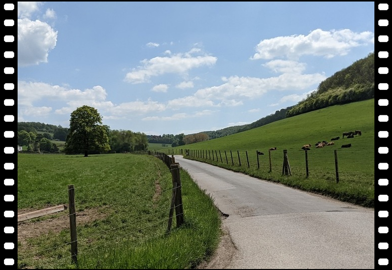
Вместо интеллигентов — коровы и кони. Нам встретился один совсем ещё молодой телёнок с пушистой темно-коричневой шерстью и дрожащей ногой. Справа постепенно нарастает холм и подходит всё ближе к дороге. Сверху он покрыт лесом, но если продраться через лес на верхушку, то там большое плоское плато и чья-то ферма.
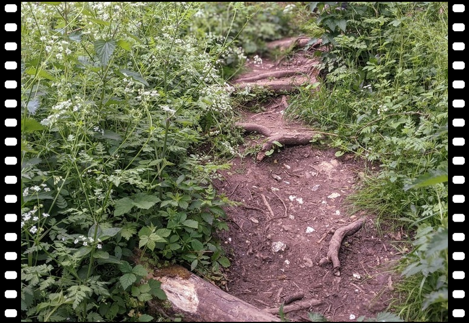
Тут мы свернули с дороги вправо и занялись собственно взбиранием на холм и продиранием через лес (отдуваясь и пыхтя так, что коровы внизу могли нам посочувствовать).
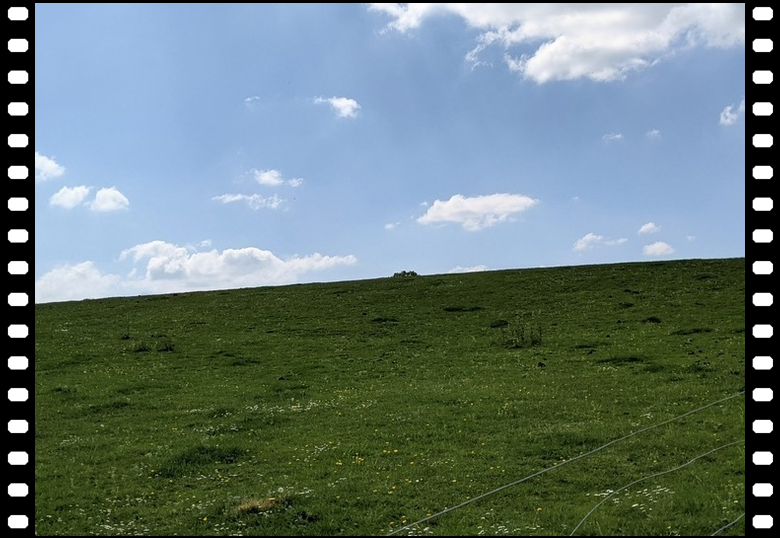
На вершина холма — поле. Что хочется увидеть за горизонтом? Бескрайний синий простор, закругляющийся край Земли и открытый космос, из которого повеет солнечный ветер. (Я написала это и подумала, что бескрайний простор противоречит требованию про край Земли, но такие мелочи смущают только переводчика.)
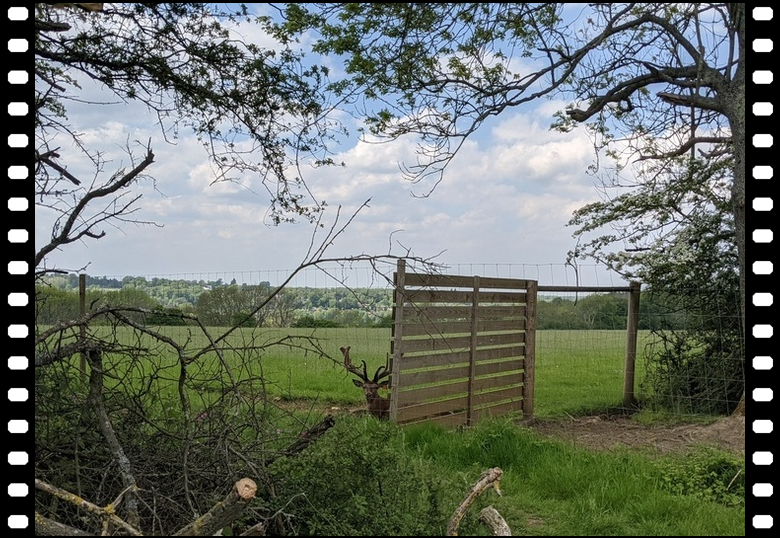
На самом деле за горизонтом нас встречает олень!
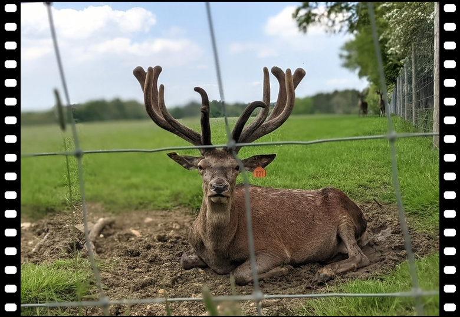
Он выбрал видимо единственный грязевой пятак на всём поле и отдыхает тут, встречая путников. Рога у него, конечно, лихие.
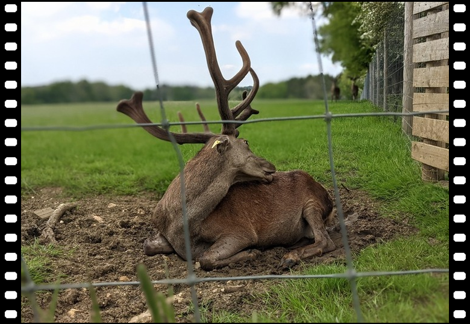
В отдалении стоят оленьи друзья. Наш олень повернулся и позвал их (или просто посмотрел — не понимаю я по-оленьи). Интересно, что животные думают, и любит ли этот олень это место потому, что тут проходят люди и таращатся на него. Я вообще с животными чувствую себя глуповато, и они кажутся мне грустными и укоряющими. А ещё хотелось бы понимать, какие у них в голове далёкие планы. Кстати, год назад мы видели здесь стадо маленьких оленей, так что встреча не совсем неожиданная (но приятная).
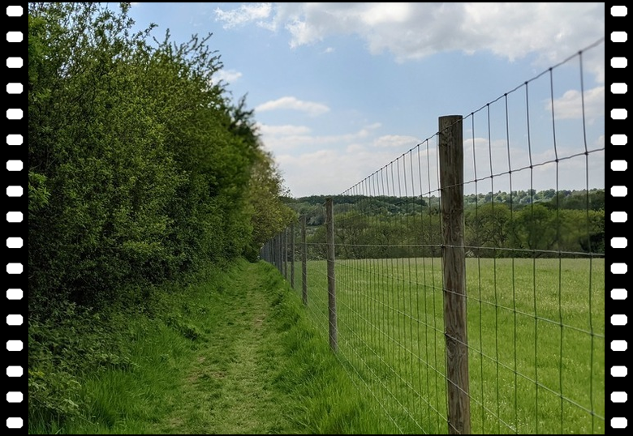
Тем временем мы перевалили за вершину холма и начали спуск вниз, в лощину между холмами. Путь на карте показан не совсем такой, каким мы идём — карта автоматически прокладывает путь вдоль дороги или известной тропы, а мы сошли с дороги и идём как хотим.
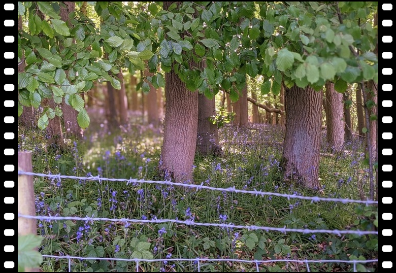
Перед спуском в лощину проходим короткий лес. Не знаю, видно ли на фотке, но вся земля тут покрыта синими цветами (моего самого любимого оттенка синего — с лёгкой фиолетоветизной). Это вообще очень распространённое явление в здешних широтах (примерно как в Беларуси — подснежники и пролески), а цветы называются British bluebell, English bluebell или Common bluebell. В определённое время года такой лес превращаются в синее море. Сейчас они уже отцветают, но их всё ещё много.
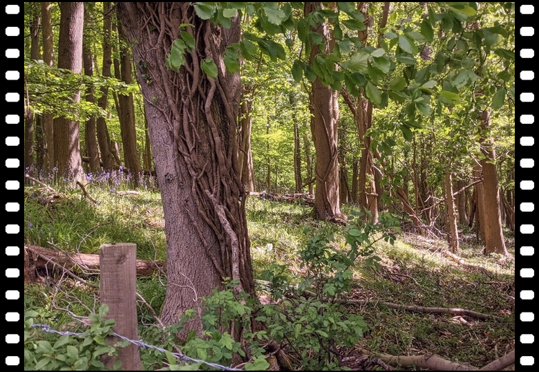
Лес здесь очень одушевлённый, как у Льюиса. Лианы похожи на волосы. Не знаю, симбиоз у них тут, нахлебничество или квартирантство, но выглядит здорово.
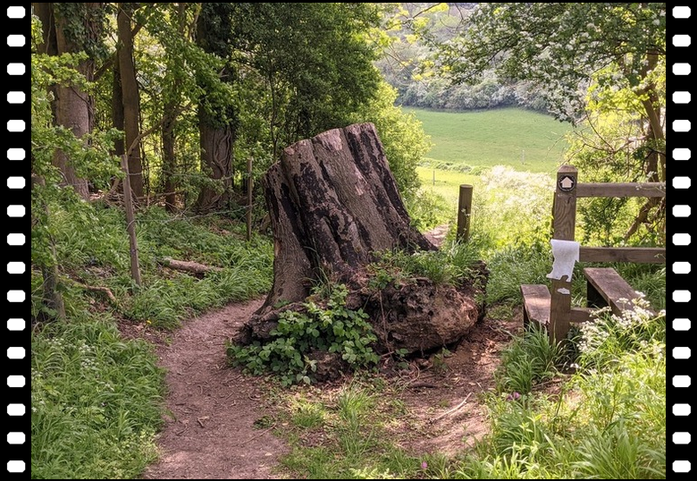
А вот и выход в лощину. На дороге — огромный пень. Он был тут год назад, и думаю будет десять лет спустя. Для любителей правил предусмотрен кусок забора и подножка, чтобы его переступить.
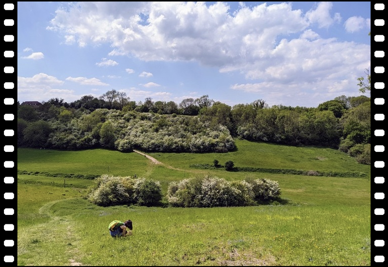
Лощина проходит между двумя холмами. С одного мы спустились, а на другой будем подниматься и продолжать путь по дороге, уходящей влево. По дну лощины идёт заросший травой ров, в котором раньше была дорога. Вся земля направо и налево — чьи-то частные владения и фермы, и периодически встречаются таблички, сообщающие нам об этом.
В траве пасутся какие-то животные с рюкзаками.
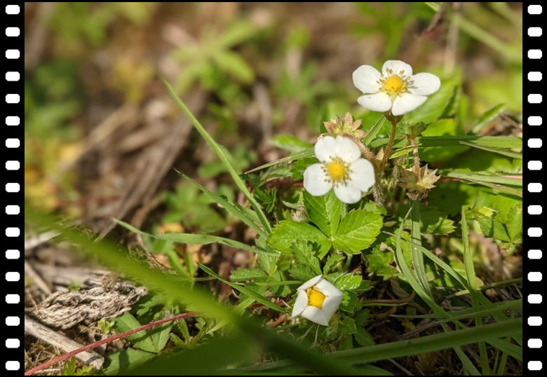
На фотке не видно, но, во-первых, склон там довольно крутой, а во вторых на нём великое множество разных луговых трав и цветов. Вот, например, земляника.
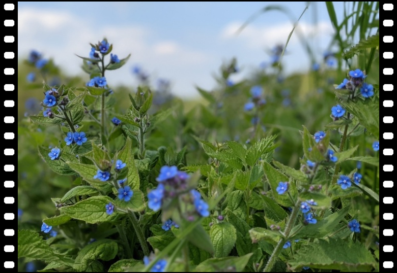
А эта фотка с характерными синими цветами сделана с самого дна заросшего травой рва.
Перейдя лощину, мы уходим под тень деревьев. Лесная дорога, помимо обычных камней и песка, пестрит вкраплениями битого стекла и плитки — видимо, тут рядом стройка, и когда-то ездили грузовики с мусором. У лондонцев, когда они делают ремонт, принято первым делом водрузить возле дома большой мусорный контейнер и набить его под завязку выломанными из дома окнами, отодранными коврами и всякой трухой. Осколки разноцветной плитки красиво поблёскивают в тени.
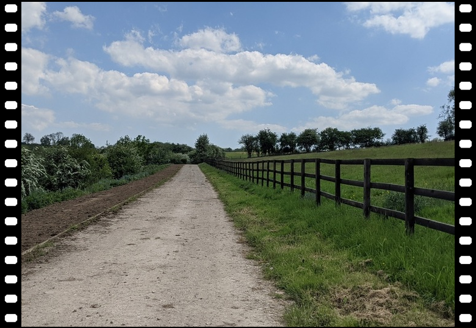
Выбравшись из лощины, мы опять набираем высоту (снова отдуваясь и пыхтя) и выходим на просёлочную песчаную дорогу, идущую строго на юг. Лощина остаётся слева (там за кустами обрыв и непроходимые дебри). Не очень понятно, можно тут ходить или нет — год назад мы прошли, но вообще-то при дороге валяется большой кричащий знак “Private Road”. Ну ничего, наверное это для машин. :) Получается, вся эта местность — это как бы остров на холмах в треугольнике между двумя трассами и Лондонской кольцевой. Тайная земля, в которую можно попасть, если знать, как.
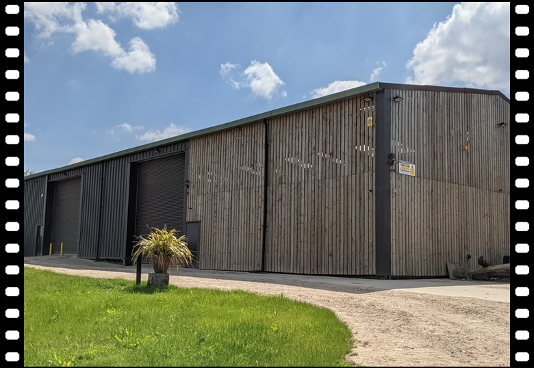
Проходим мимо какого-то сарая. Я не могла это не сфоткать: при входе стоит на постаменте куст травы в горшке. :D
Дорога огибает сарай и тянется дальше через поля на гребне холма. По сторонам — узкая полоса деревьев, сообщающая приятный тенёк. Тут изредка встречаются люди, по виду — такие же ходоки, как мы. В какой-то момент деревья по бокам заканчиваются, и ненадолго открывается вид назад, на центр Лондона в синей дали. Я пыталась его сфоткать, но получилось плохо.
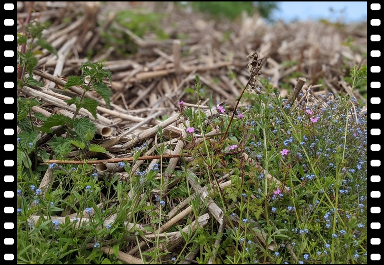
Тем временем дорога дичает и упирается в какие-то кусты, заборы и бурелом. Основная тропа уходит резко влево и вниз — нам туда как раз не надо, скорее всего после долгого петляния мы вышли бы назад на асфальтированную дорогу, ведущую к Волдингхэмовской школе. Поэтому вовремя сворачиваем по малозаметной южной тропе, заросшей крапивой и какими-то сиреневыми цветами, напоминающими иван-чай (на фотке не они). Справа — заросли, дикость и какие-то заводские приспособления за забором. Слева — коровные поля.
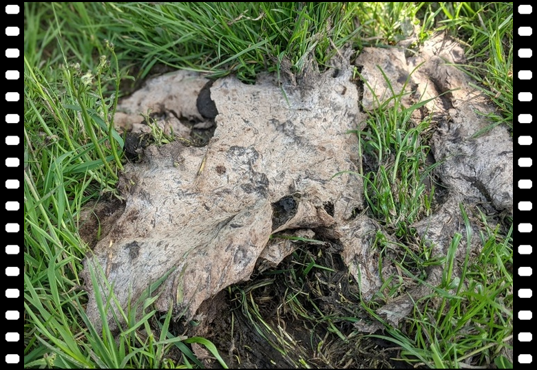
Тут мы подходим к самому страшному участку пути — великому и ужасному коровному полю. Дело в том, что я опасаюсь вторгаться в личное пространство коров. Как-то раз в детстве мы шли из деревни Соломоречье и попали прямо в стадо коров, которых деревенские как раз перегоняли через дорогу. Один бык начал на нас подозрительно коситься и пошёл было в нашу сторону. С тех пор я опасаюсь идти напрямик через коров, тем более отдыхающих — сразу видно, как они начинают нервничать, когда мы случайно приближаемся к какому-нибудь телёнку.
Поле было настолько ужасным, что единственное воспоминание, оставшееся от него — страшная навозная лепёха в траве, напоминающая череп динозавра.
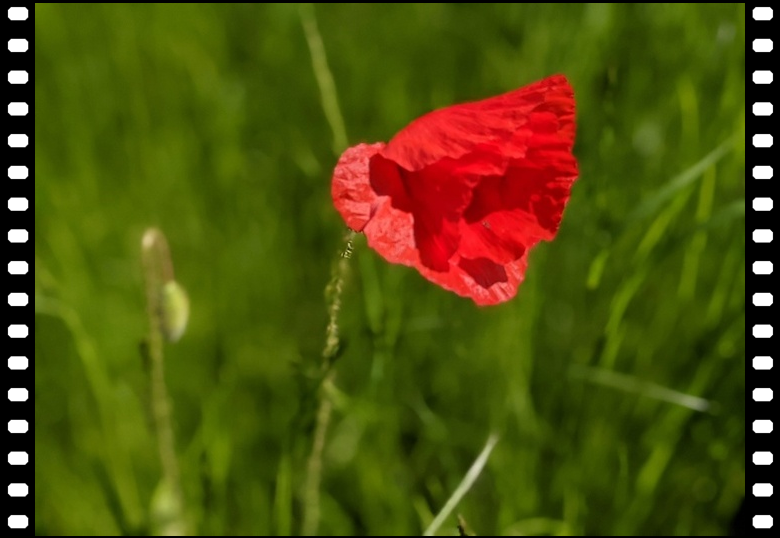
Ну вот, ещё единственный маковый цветок.
Чудом спасшись от коров и не оглядываясь назад, мы снова забираемся в лес. Где-то здесь неподалёку Чесночный Лес — удивительно красивое место с высокими деревьями, косыми лучами света и свисающими канатами лиан, и морем белых соцветий дикого чеснока под ногами. Впрочем, он уже начал отцветать. Дикий чеснок (он же черемша) похож больше всего на ландыши, а пахнет примерно как дачный погреб с солёными огурцами. Когда заходишь в такой лес, первая мысль в голове — где-то тут дачники квасят огурцы.
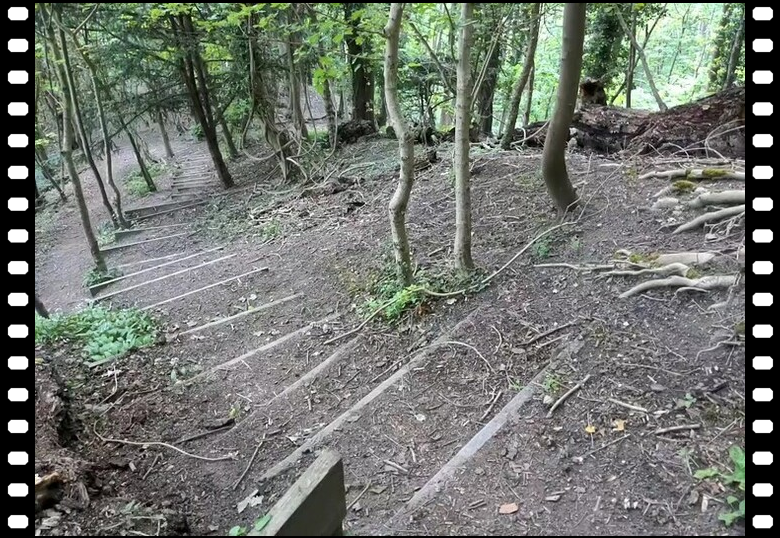
В этот раз в Чесночный Лес мы не попали (сохраняли силы для неизвестной второй части пути), зато попали на лестницу-в-сто-ступеней (к числам попрошу не придираться). Типичный британский лес, очень классный — серовато-зелёный, сухой и полный воздуха, пространства и перепадов высоты.
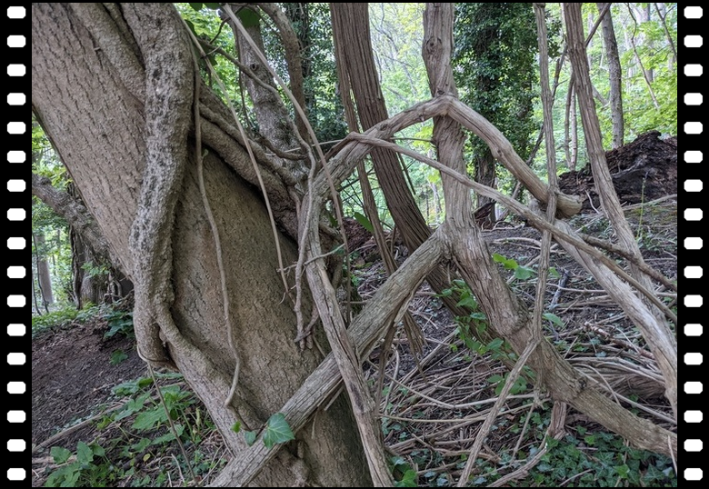
У верблюда два горба, потому что жизнь — борьба!
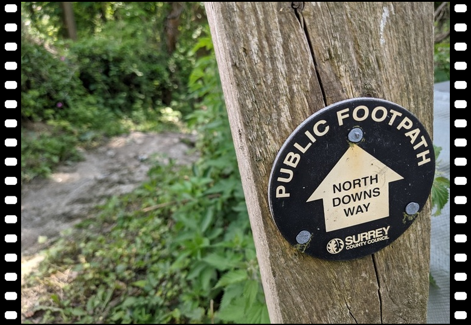
А вот и наша тропа, North Downs Way. До сих пор мы только выходили на неё, а теперь повернём вправо и пойдём в сторону города Merstham.
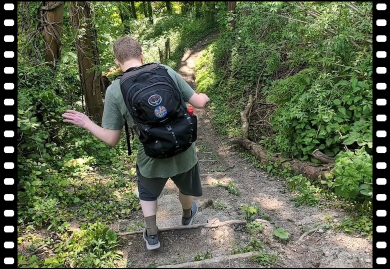
Сергей Анатольевич почти уже спустился по лестнице-в-сто-ступеней.
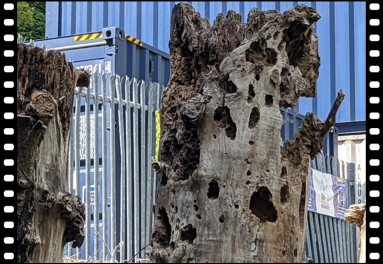
Внизу нас поджидал какой-то завод — вообще, тут часто бывают разработки меловых карьеров или чего-то ещё, и когда идёшь по лесу, нет нет да и наткнёшься на отвесный откос с сараями и тракторами на дне. Это всё за забором, чтобы никто не упал вниз. Завод встречает нас галереей древесных остовов, от которых уже мало что осталось кроме дыр.
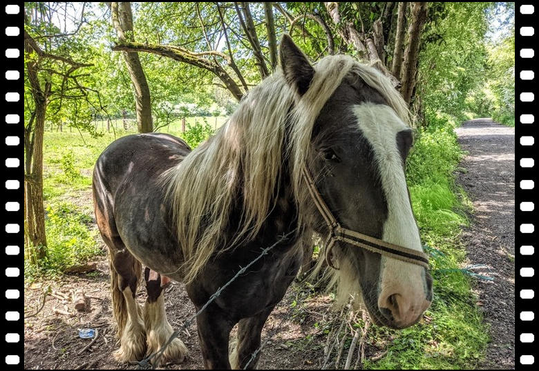
За заводом тропа выходит на асфальтовую дорогу и какое-то время идёт в колее. Лес на время отступает и начинаются дома и фермы. Возле одной из ферм за забором стоит задумчивый конь с прекрасными глазами и блондинистой бородой. Зуб даю, если бы этот конь был голливудским актёром, по нему бы все сохли направо и налево. Он стоит возле самой дороги и как будто ждёт, чтобы его погладили по носу.
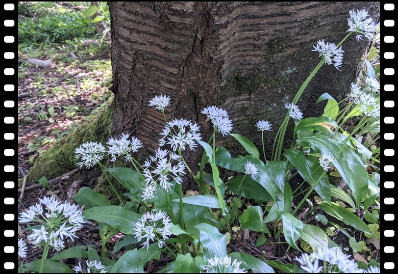
А вот и пресловутый чеснок. :)
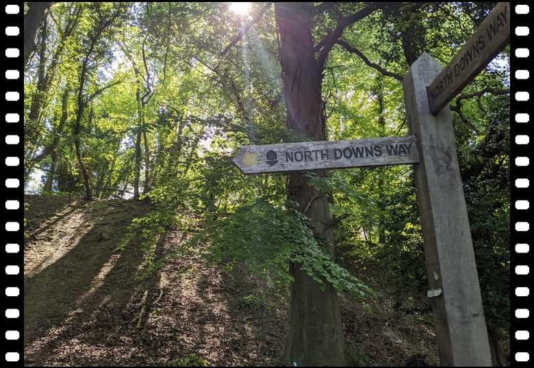
Вскоре дорога опять переходит на лесную тропу. Добрые люди поставили тут указатели, так что с пути не собьёшься. Если сбиться, тоже не страшно, но скорее всего после долгого плутания выйдешь на трассу, и дальше будет уже не так интересно — придётся давать многокилометрового крюка. Именно такими были наши походы, когда мы только приехали в UK: мы не знали никаких троп и упорно ходили вдоль дорог. А потом мой товарищ с прошлой работы Кристоф Меервальд показал мне настоящую карту, где отмечены тропы. Он сам из Австрии и любит ходить по горам, вот например картинки из его недавнего похода: https://cmeerw.org/photo/zwiesel-2020-1.
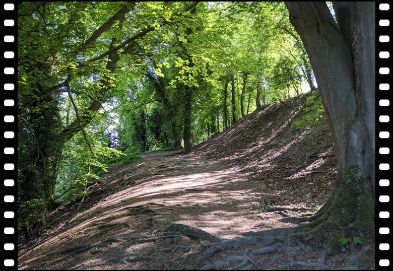
Мы снова набираем высоту. Времени около трёх, и солнце палит вовсю. Мы идём уже часа три.
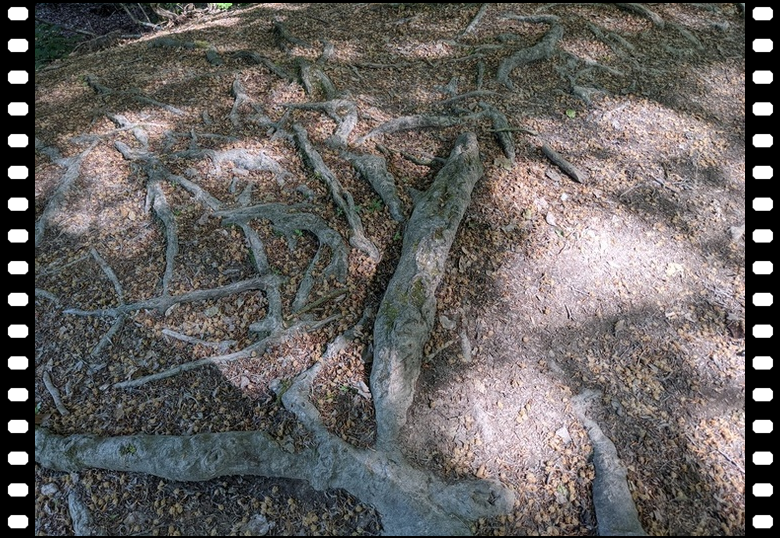
Тут в лесу полутень и переплетённые корни под ногами. Эти деревья — буки, и земля успыпана пушистыми шариками их цветов. Повсюду, где мы идём, обочины засыпаны этими шариками, и так продолжается большую часть нашего похода. Местами попадаются короткие лестницы.
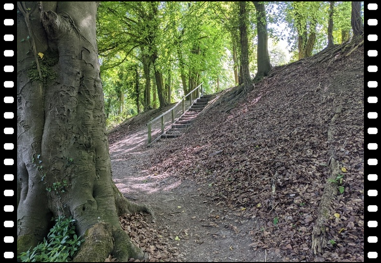
Технически мы прошли примерно полпути, и не то чтобы сильно устали, но в голову начинают закрадываться мысли о привале. Если бы мы шли 20 или 25 км, то было бы ещё рановато.
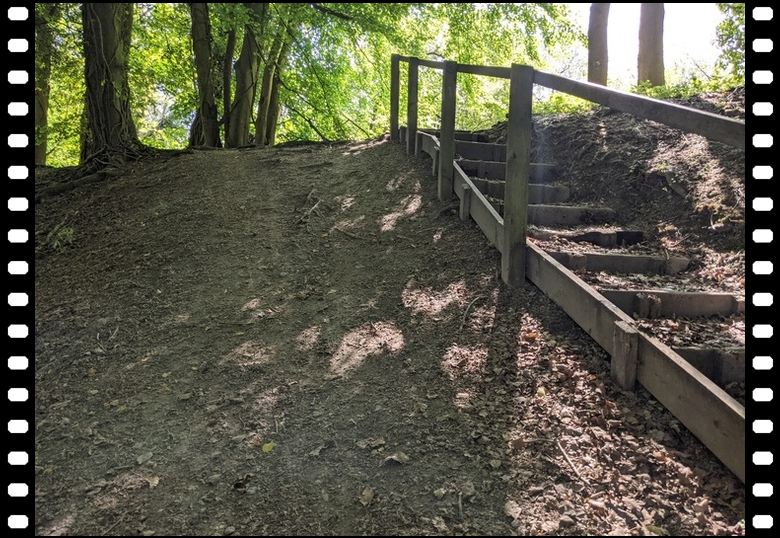
Тут тропа делает выверт, и мы выходим на дозорный пункт — лысое место на склоне, откуда открывается горизонт. Это вид вправо от тропы, то есть на юг, в сторону океана и от центра Лондона. В тени большого хвойного дерева стоит лавка с видом на даль. В общем, всё предусмотрено для усталого путника и любителя устроить перекус.
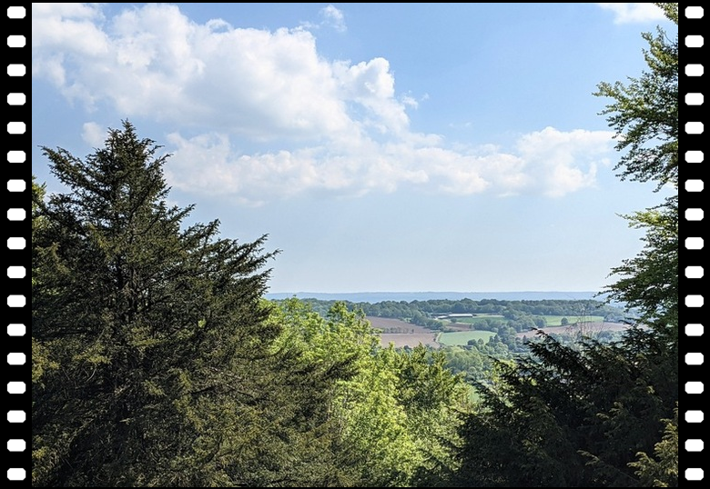
Чищеная мытая морковка — лучшее из всех благ цивилизации. Если бы у меня исчезли все несметные богатства, то я бы сожалела в первую очередь об этой морковке, а также о зелёных яблоках и мытом шпинате, который можно есть прямо из пакета. Так вот просто идёшь в магаз, набираешь хоть три пачки, и можно сразу начинать есть. У морковки есть ещё то преимущество, что Сергей Анатольевич любит её не меньше меня.
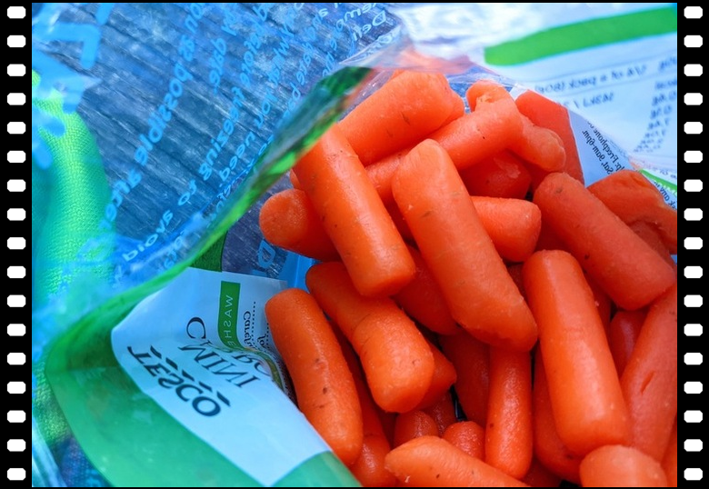
Одна морковина попалась странной винтообразной формы. :)
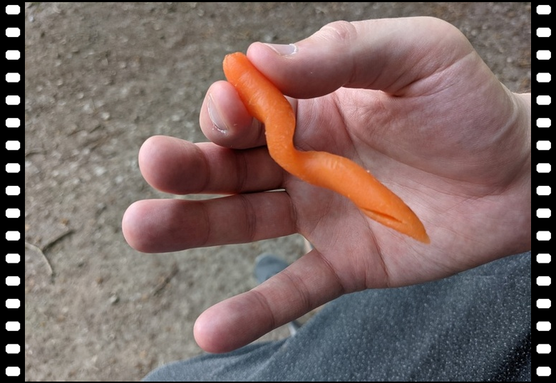
Съев мешок морковки и забросившись на дорогу ментосом, мы продолжаем свой путь.
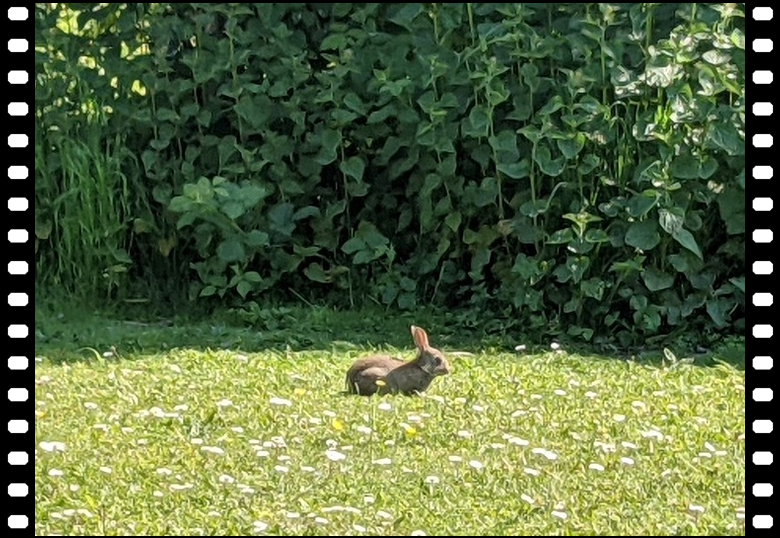
Внезапно в траве показался заяц. Или кролик? Для зайца он явно маловат.
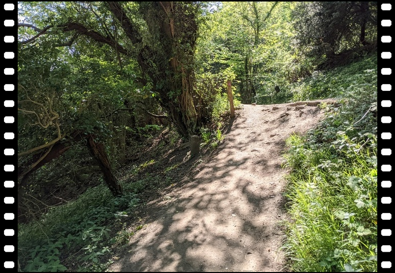
Тропа взбирается ещё немного выше и выходит на лесную дорогу.
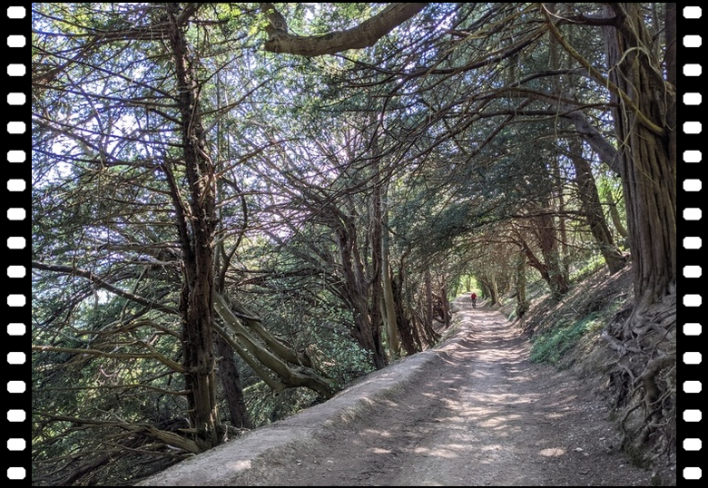
Слева — обрыв и бурелом, в который не хотелось бы упасть. Меня жутко парит, когда кто-то идёт по краю обрыва.
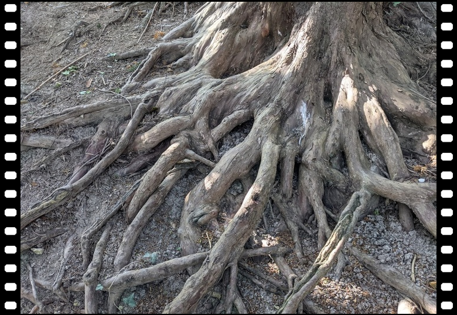
А это дерево как будто сто раз наступило само себе на ногу. :)
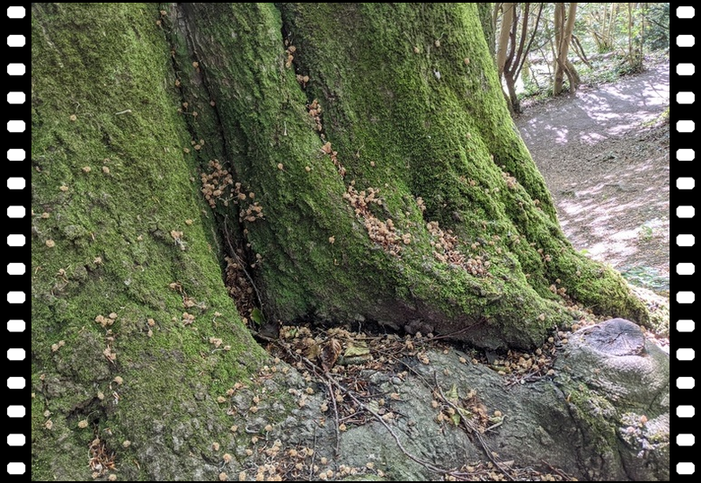
Подножие толстенного бука. Всё засыпано шариками-цветами.
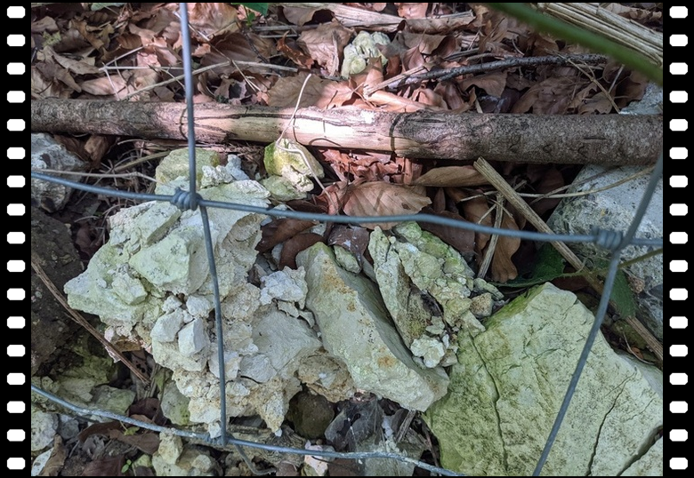
Кроме листьев и корней, тут встречаются иногда какие-то куски известняка (наверное).
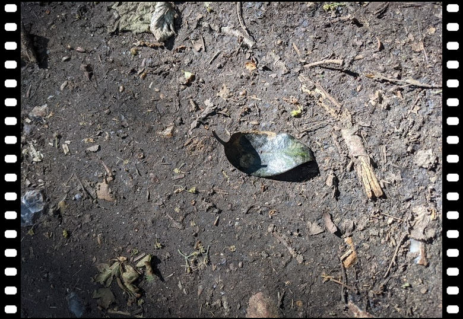
А этот лист поразил меня своей уайетовской красотой.
Постепенно лес редеет и заканчивается. За деревьями ярчеет полоска горизонта, и мы снова выходим на открытый простор. Напоследок — ещё одна фотка синих цветов.
На просторе снова печёт солнце (ещё сильнее, чем раньше — сейчас часа четыре). На обочине заросли цветов и папоротника.
В какой-то момент справа открылся вид на далёкий центр Лондона. На фотке, если присмотреться, виден даже узкий белый треугольник Shard — это небоскрёб, напоминающий осколок, который находится на вокзале London Bridge. Более тёмные дома на переднем плане — скорее всего, East Croydon, на котором мы живём.
А у нас тут в траве одуваны.
Идём дальше — дорога сворачивает направо и проходит через какое-то поселение. Вот так, по мнению здешних жителей, должен выглядеть велосипед. :)
Местами тут встречаются странные вещи. Например, в одном дворе мы увидели остов вертолёта, а за ним ещё и полуразобранный самолёт в длину метров десять.
Вот — самая лучшая фотка дали. Лучшая, потому что с сосной. Это вид на юго-запад, в противоположную сторону от центра Лондона.
Вскоре мы выходим на поле. Земля тут белая и потрескавшаяся, такое чувство что состоит из мела и песка. Солнце уже ниже, и свет стал ещё более ярким и резким, как в феврале.
Это последнее большое поле на нашем пути — за ним начинаются дорожные развязки и кольцевая.
Мы спускаемся вниз с холмов. Справа видно, как кольцевая, петляя, уходит за горизонт. А на небе видны едва заметные столбы света, возникающие когда косые лучи солнца пронизывают облака.
Наши щурящиеся от солнца походные морды.
И кто сказал, что в Британии нет прямых дорог? Вот, пожалуйста — очень даже прямая. :D
Время от времени на поле встречаются “стрелки” — узкие параллельные залысины, идущие по прямой от края до края. То-ли от колёс, то-ли так сажали то, что здесь растёт — но это не тропы. Мне они напоминают струны, а поле тогда — гигантская балалайка. Любители теории струн могли бы убедиться тут в своей правоте.
Дорога выводит нас к немного занюханному переходу. Мы сначала было удивились — обычно над кольцевой переходы по верху, да и сама она как-то посерьёзнее. Но потом стало ясно, что это не кольцевая, а одна из более мелких подъездных дорог (из этих кустов вообще не видно, где там что). Кто-то с баллончиком тут явно халтурил — на переходе ещё рисовать и рисовать.
За переходом наc встречает нависающая над головой табличка, которая сообщает, что с тропы сходить нельзя: слева и справа чья-то чужая земля. Всё-таки товарищ Толкиен покривил душой с этим своим Лихолесьем — то у него злые деревья, то пауки, то сонный ручей. А на самом деле — private property, вот почему с тропы сходить нельзя!
Дальше уже начинается более-менее город: дорога, которую можно назвать улицей. По обе стороны — дома, некоторые довольно старые и заброшенные. (Там ещё был во дворе проржавелый БТР.)
Тут мы поняли, что прошлёпали наш поворот, и надо малость вернуться. Когда повернулись, оказалось, что тени уже воooт такие длинные.
А вот, собственно, и поворот: типичный узкий проход между домами, с двух сторон обнесённый деревянным забором. Это называется public footpath, то есть тропа, по которой можно спокойно шляться, не опасаясь вторгнуться в чью-то личную жизнь. Обычно эти проходы труднозаметные и обозначаются зелёными указателями. Если не знать, что они есть — так и будешь всю жизнь ходить по скучным местам вдоль дорог (и ключи подавать). А если знать — можно попасть в совершенно неожиданные места или здорово срезать крюка.
Тропа привела нас к переходу над кольцевой. Вид влево, на восток.
А это вид вправо, на запад. Дорога от жары напоминает арбуз, ну или спину бурундука.
За переходом нас встречает зелёный пригорок, и по виду уж за ним-то точно должен быть край земли. :)
Но вместо края земли там оказался странный зигзагообразный спуск. У нас не было сил преодолевать все эти кренделя, так что мы окончательно перестали строить из себя приличных людей и ломонулись по склону, прямо по траве, в сторону города Merstham и железнодорожной станции.
А вот и вход на станцию. Поезда ждать пришлось минут пятнадцать, и мы успели оттереть руки от грязи и съесть кусок хлеба и тыквенный хлебец.
Минут пятнадцать езды (проезжаем чёрный туннель в горе), и мы назад на Ист-Кройдоне. Идём домой. :) Солнце уже низко, и ветер холодит взмокшую спину.
Недалеко от нашего дома — кладбище ёлок, которые безжалостные британцы выкидывают чуть ли не первым делом второго января (как у Г.Х. Андерсена). Люди вышвыривают ёлки прямо на улицу (а куда ещё, с мусором тут проблема) и они мокнут под унылым дождём, пока их не стащат в такую вот кучу на задворках. Зато потом они долго ещё лежат и радуют глаз медно-рыжими оттенками. :)
Наш дом торчит из строительных лесов, как конфета из фантика.
Вот мы и дома! Как раз, чтобы успеть немного отойти перед завтрашним рабочим днём. :)
P.S. Надеюсь, удастся сходить в большой тяжёлый (однодневный) поход этим летом, куда-нибудь в сторону Горного Края, с поездами, приключениями и возвращением домой по темноте. Ну а это была разминка!
comments powered by Disqus